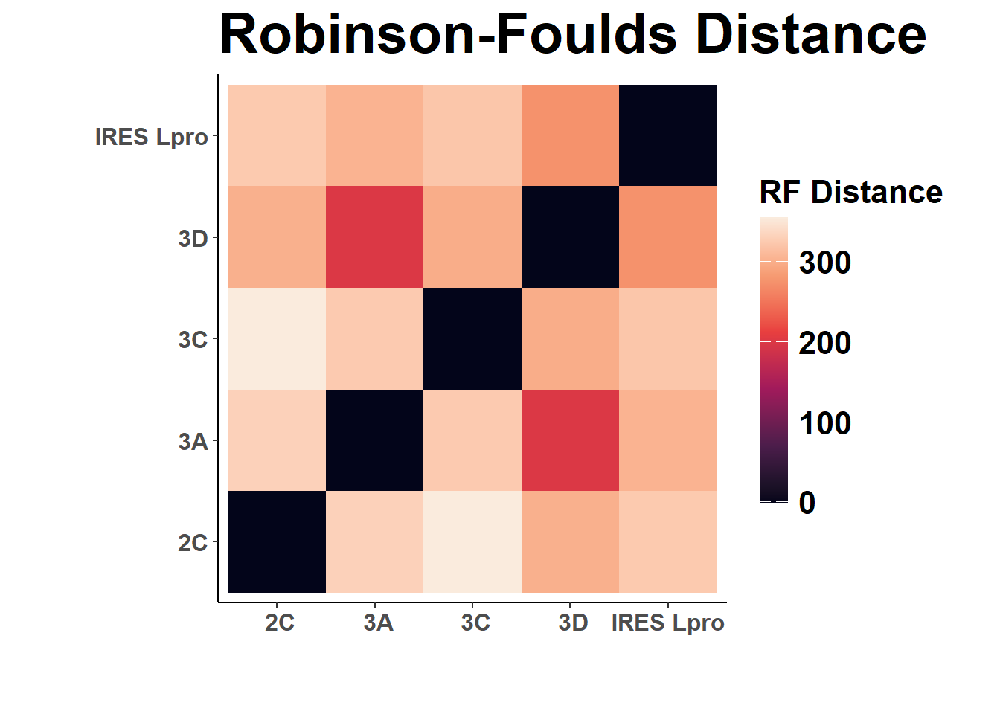
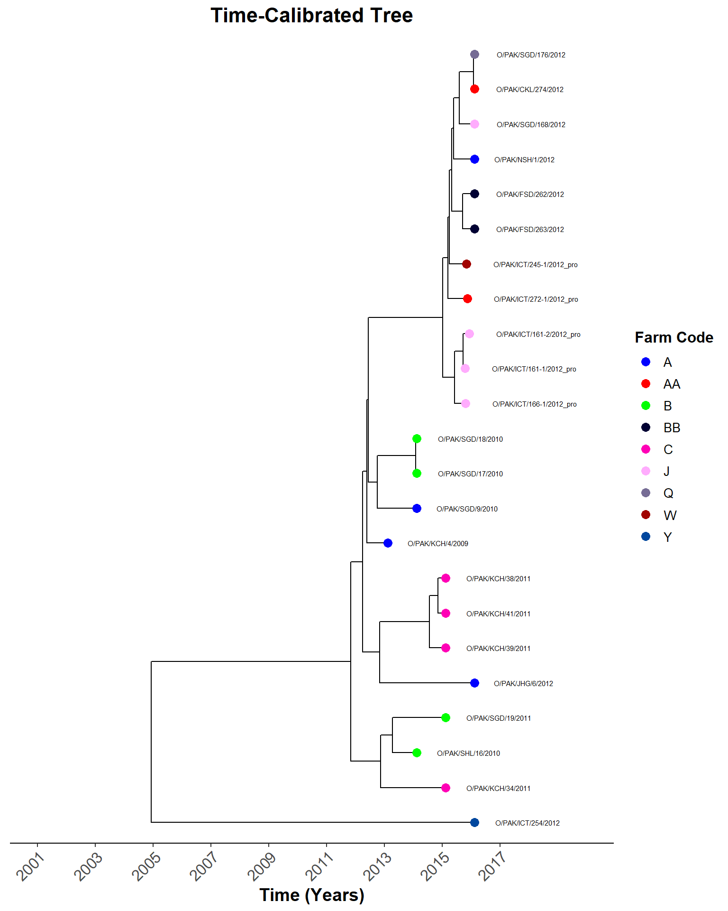
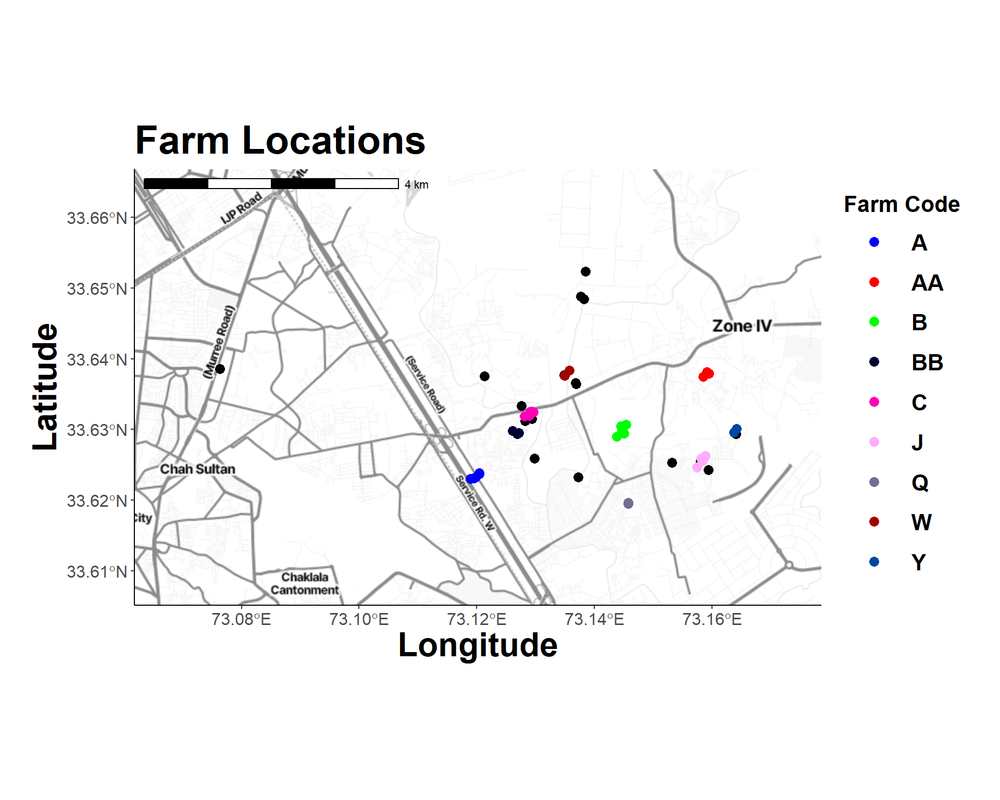
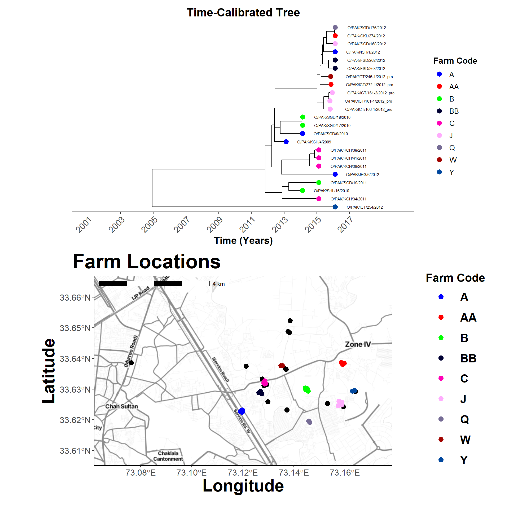
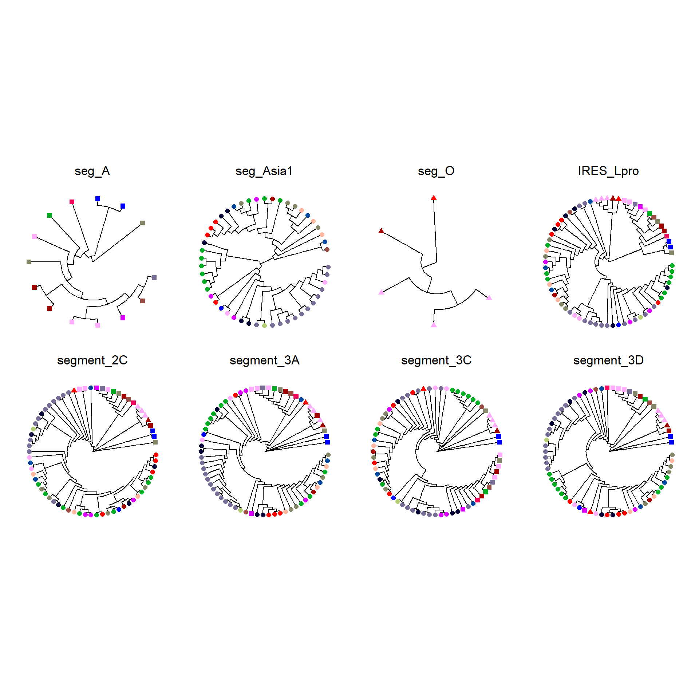
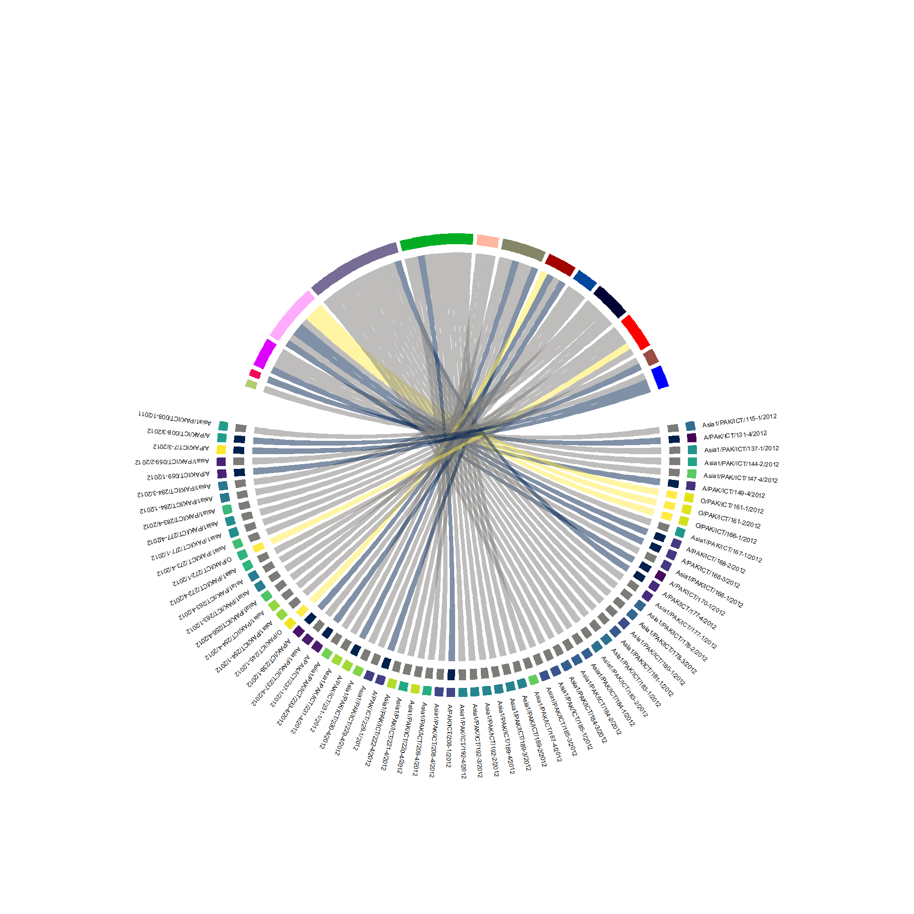

Gene Trees
Time calibrated trees
Map API
Hide code
# api to access background maps
map_api <- yaml::read_yaml(here("local", "secrets.yaml"))
register_stadiamaps(key = map_api$stadi_api)
has_stadiamaps_key()[1] TRUERead Gene Trees
Segment specific phylogenies.
Hide code
# divergence time (capsid)
sero_A.tree <- read.nexus(here("local/beast/a_1/sero_a.mcc.tre"))
sero_Asia1.tree <- read.nexus(here("local/beast/asia1_1/sero_asia1.mcc.tre"))
sero_O.tree <- read.nexus(here("local/beast/o_1/sero_o.mcc.tre"))
# phylogeny list from directory
tree_files <- list.files(here("local/paktrees"), pattern="_rev\\.nex$")
# read ML trees
seg_A_capsid.tree <- read.nexus(here("local/paktrees", tree_files[6]))
seg_Asia1_capsid.tree <- read.nexus(here("local/paktrees", tree_files[7]))
seg_O_capsid.tree <- read.nexus(here("local/paktrees", tree_files[9]))
IRES_Lpro.tree <- read.nexus(here("local/paktrees", tree_files[8]))
seg_2C.tree <- read.nexus(here("local/paktrees", tree_files[1]))
seg_3A.tree <- read.nexus(here("local/paktrees", tree_files[2]))
seg_3C.tree <- read.nexus(here("local/paktrees", tree_files[3]))
seg_3D.tree <- read.nexus(here("local/paktrees", tree_files[4]))
# gene trees
gene_trees.lst <- list(
seg_A = seg_A_capsid.tree,
seg_Asia1 = seg_Asia1_capsid.tree,
seg_O = seg_O_capsid.tree,
IRES_Lpro = IRES_Lpro.tree,
segment_2C = seg_2C.tree,
segment_3A = seg_3A.tree,
segment_3C = seg_3C.tree,
segment_3D = seg_3D.tree
)Metadata
Tree metadata on farm locations and sample processing.
Hide code
# sample Metadata
sero_meta <- readRDS(here("local/assets/sero_df.rds"))
sero_meta %>%
group_by(status) %>%
summarise(Count = length(status))| status | Count |
|---|---|
| Clinical | 46 |
| Subclinical | 68 |
Hide code
# farm Coordinates
farm_coords <- read.csv(here("local/farms_locs.csv")) %>%
select(farm_code, coord_x, coord_y)Subclinical Samples
Preclinical samples are of greatest interest.
Hide code
subclinical_df <- sero_meta %>%
filter(status == "Subclinical")
dim(subclinical_df)[1] 68 8Hide code
sub_trees.lst <- lapply(gene_trees.lst, function(tree) {
tips_to_keep <- subclinical_df$label
drop.tip(tree, setdiff(tree$tip.label, tips_to_keep))
})
names(sub_trees.lst) <- names(gene_trees.lst)
short_sub_trees.lst <- sub_trees.lst[!(names(sub_trees.lst) %in%
c("seg_A", "seg_Asia1", "seg_O"))]RF Distances
A tree comparison metric. As with entanglement, the lower thhe values, the more similiar the trees.
Hide code
rf_matrix <- sapply(short_sub_trees.lst, function(tree1) {
sapply(short_sub_trees.lst, function(tree2) {
phangorn::path.dist(tree1, tree2)
})
})
rf_df <- as.data.frame(as.table(as.matrix(rf_matrix)))
rf_df$Var1 <- gsub("segment_", " ", rf_df$Var1)
rf_df$Var1 <- gsub("_", " ", rf_df$Var1)
rf_df$Var2 <- gsub("segment_", " ", rf_df$Var2)
rf_df$Var2 <- gsub("_", " ", rf_df$Var2)
ggplot(rf_df, aes(Var1, Var2, fill = Freq)) +
geom_tile() +
scale_fill_viridis_c(option = "F") +
theme_classic() +
theme(
plot.margin = unit(c(2, 8, 5, 8), "mm"),
axis.title.x = element_text(size = 24, face = "bold"),
axis.title.y = element_text(size = 24, face = "bold"),
axis.text.x = element_text(size = 12, face = "bold"),
axis.text.y = element_text(size = 12, face = "bold"),
legend.direction = "vertical",
legend.position = "right",
strip.text = element_blank(),
strip.background = element_blank(),
legend.key.size = unit(2, "line"),
legend.key.width = unit(1, "line"),
legend.text = element_text(size = 16, face = "bold"),
legend.title = element_text(size = 16, face = "bold"),
plot.title = element_text(size = 28, face = "bold")
) +
labs(title = "Robinson-Foulds Distance",
x = " ", y = " ", fill = "RF Distance")
Map and Tree
Comparing locations. Working out the map code…
Hide code
# Load the Tree
sero_O.tree <- read.nexus(here("local/beast/o_1/sero_o.mcc.tre"))
sero_O.tree <- drop.tip(sero_O.tree, tip = c("JX170756", "KR149704", "MT944981"))
# tree stats
check_stats_O <- get_tracer_stats(here("local/beast/o_1/sero_o.log.txt"))Loading required package: codaHide code
# tips to data frame
tree_meta_O <- as.data.frame(sero_O.tree$tip.label)
names(tree_meta_O) <- "tip_label"
# metadata and exclude outgroups
sero_meta_filtered <- sero_meta %>%
mutate(tip_label = label) %>%
filter(tip_label %in% sero_O.tree$tip.label,
!tip_label %in% c("JX170756", "KR149704", "MT944981"))
# combine metadata
farm_data <- farm_coords %>%
left_join(sero_meta_filtered, by = "farm_code") %>%
mutate(has_sample = !is.na(tip_label))
# color palette for farm_code
farm_color_codes <- unique(farm_data$farm_code)
n_farms <- length(farm_color_codes)
farm_palette <- setNames(glasbey(n_farms), farm_color_codes)
farm_match <- farm_data %>%
select(tip_label, farm_code)
# Merge Tree Metadata with Farm Data
tree_meta_O <- tree_meta_O %>%
left_join(farm_data, by = "tip_label") %>%
mutate(
farm_code = ifelse(is.na(farm_code), "Outgroup", farm_code),
has_sample = !is.na(farm_code) & farm_code != "Outgroup"
)
tree_meta_O <- tree_meta_O %>%
rename(tip_label_meta = label) %>%
rename(label = tip_label)
# to sf Object
farms_sf <- st_as_sf(farm_data, coords = c("coord_x", "coord_y"), crs = 4326)
tree_plot <- plot_time_tree_map(sero_O.tree, check_stats_O, tree_meta_O)Hide code
tree_plot
Oragianize map data.
Hide code
# seed
set.seed(1976)
farms_sf_jitter <- farms_sf %>%
mutate(
x = st_coordinates(.)[, 1],
y = st_coordinates(.)[, 2]
)
buffer_set <- farm_coords %>%
mutate(temp_x = coord_x) %>%
select(-coord_x) %>%
mutate(
coord_x = coord_y,
coord_y = temp_x
) %>%
select(-temp_x)
bbox <- calculate_bounding_box(buffer_set, 1)
bbox_coords <- c(left = bbox$min_lon, bottom = bbox$min_lat,
right = bbox$max_lon, top = bbox$max_lat)
background_map <- get_map(location = bbox_coords,
source = "stadia", maptype = "stamen_toner_lite")ℹ © Stadia Maps © Stamen Design © OpenMapTiles © OpenStreetMap contributors.Hide code
map_plot <- ggmap(background_map) +
geom_sf(data = farms_sf_jitter %>% filter(!has_sample),
fill = "black", color = "black", size = 3, shape = 21, inherit.aes = FALSE) +
geom_sf(data = farms_sf_jitter %>% filter(has_sample),
aes(fill = farm_code), size = 3, shape = 21, color = "transparent",
inherit.aes = FALSE) +
geom_jitter(
data = farms_sf_jitter %>% filter(has_sample),
aes(x = x, y = y, fill = farm_code),
size = 3, shape = 21, color = "transparent", width = 0.001, height = 0.001
) +
scale_fill_manual(values = farm_palette) +
theme_classic() +
theme(
plot.margin = unit(c(2, 8, 5, 8), "mm"),
axis.title.x = element_text(size = 24, face = "bold"),
axis.title.y = element_text(size = 24, face = "bold"),
axis.text.x = element_text(size = 12, face = "bold"),
axis.text.y = element_text(size = 12, face = "bold"),
legend.direction = "vertical",
legend.position = "right",
strip.text = element_blank(),
strip.background = element_blank(),
legend.key.size = unit(2, "line"),
legend.key.width = unit(3, "line"),
legend.text = element_text(size = 16, face = "bold"),
legend.title = element_text(size = 16, face = "bold"),
plot.title = element_text(size = 28, face = "bold")
) +
labs(title = "Farm Locations", fill = "Farm Code",
x = "Longitude", y = "Latitude") +
annotation_scale(location = "tl", width_hint = 0.4) +
coord_sf(crs = 4326)Coordinate system already present. Adding new coordinate system, which will
replace the existing one.Hide code
map_plot
Hide code
combined_plot <- tree_plot / map_plot +
plot_layout(heights = c(2, 2))
combined_plot
Segment Trees
View trees in panel.
Hide code
plot_tree <- function(tree, metadata, title) {
p <- ggtree(tree, branch.length='none', layout='circular') %<+% metadata +
geom_tippoint(data = ~subset(., !is.na(farm_code) & farm_code != "NA"),
aes(color = farm_code, shape = serotype), size = 2) +
scale_color_manual(values = farm_palette) +
scale_shape_manual(values = c("A" = 15, "Asia1" = 16, "O" = 17)) +
ggtitle(title) +
theme(#plot.title = element_blank,
plot.title = element_text(hjust = 0.5),
legend.position = "none")
return(p)
}
length(unique(subclinical_df$farm_code))[1] 14Hide code
# individual plots
gene_plots <- lapply(names(sub_trees.lst), function(name) {
plot_tree(sub_trees.lst[[name]], subclinical_df, title = name)
})Hide code
combined_plot <- wrap_plots(gene_plots, ncol = 4)
combined_plot
Chord Diagram
Hide code
links_df <- do.call(rbind, lapply(names(short_sub_trees.lst), function(gene) {
tree <- short_sub_trees.lst[[gene]]
subclinical_df %>%
filter(label %in% tree$tip.label) %>%
mutate(gene = gene,
label = gsub("_pro", "", label),
animal= paste0("samp_", animal)) %>%
select(label, farm_code, serotype, animal, gene)
}))
serotype_palette <- setNames(viridis(3, option = "E"), unique(links_df$serotype))
animal_palette <- setNames(viridis(length(unique(links_df$animal)),
option = "D"), unique(links_df$animal))Hide code
plot_chords("IRES_Lpro", links_df, serotype_palette, farm_palette, animal_palette)Note: 5 points are out of plotting region in sector
'Asia1/PAK/ICT/115-1/2012', track '1'.Note: 5 points are out of plotting region in sector
'A/PAK/ICT/131-4/2012', track '1'.Note: 5 points are out of plotting region in sector
'Asia1/PAK/ICT/137-1/2012', track '1'.Note: 5 points are out of plotting region in sector
'Asia1/PAK/ICT/144-2/2012', track '1'.Note: 5 points are out of plotting region in sector
'Asia1/PAK/ICT/147-4/2012', track '1'.Note: 5 points are out of plotting region in sector
'A/PAK/ICT/149-4/2012', track '1'.Note: 5 points are out of plotting region in sector
'O/PAK/ICT/161-1/2012', track '1'.Note: 5 points are out of plotting region in sector
'O/PAK/ICT/161-2/2012', track '1'.Note: 5 points are out of plotting region in sector
'O/PAK/ICT/166-1/2012', track '1'.Note: 5 points are out of plotting region in sector
'Asia1/PAK/ICT/167-1/2012', track '1'.Note: 5 points are out of plotting region in sector
'A/PAK/ICT/168-2/2012', track '1'.Note: 5 points are out of plotting region in sector
'A/PAK/ICT/168-3/2012', track '1'.Note: 5 points are out of plotting region in sector
'Asia1/PAK/ICT/168-1/2012', track '1'.Note: 5 points are out of plotting region in sector
'A/PAK/ICT/170-1/2012', track '1'.Note: 5 points are out of plotting region in sector
'A/PAK/ICT/177-4/2012', track '1'.Note: 5 points are out of plotting region in sector
'Asia1/PAK/ICT/177-1/2012', track '1'.Note: 5 points are out of plotting region in sector
'Asia1/PAK/ICT/178-2/2012', track '1'.Note: 5 points are out of plotting region in sector
'Asia1/PAK/ICT/178-3/2012', track '1'.Note: 5 points are out of plotting region in sector
'Asia1/PAK/ICT/180-1/2012', track '1'.Note: 5 points are out of plotting region in sector
'Asia1/PAK/ICT/181-1/2012', track '1'.Note: 5 points are out of plotting region in sector
'Asia1/PAK/ICT/183-1/2012', track '1'.Note: 5 points are out of plotting region in sector
'Asia1/PAK/ICT/183-2/2012', track '1'.Note: 5 points are out of plotting region in sector
'Asia1/PAK/ICT/184-1/2012', track '1'.Note: 5 points are out of plotting region in sector
'Asia1/PAK/ICT/184-2/2012', track '1'.Note: 5 points are out of plotting region in sector
'Asia1/PAK/ICT/184-3/2012', track '1'.Note: 5 points are out of plotting region in sector
'Asia1/PAK/ICT/185-1/2012', track '1'.Note: 5 points are out of plotting region in sector
'Asia1/PAK/ICT/185-3/2012', track '1'.Note: 5 points are out of plotting region in sector
'Asia1/PAK/ICT/187-4/2012', track '1'.Note: 5 points are out of plotting region in sector
'Asia1/PAK/ICT/189-2/2012', track '1'.Note: 5 points are out of plotting region in sector
'Asia1/PAK/ICT/189-3/2012', track '1'.Note: 5 points are out of plotting region in sector
'Asia1/PAK/ICT/189-4/2012', track '1'.Note: 5 points are out of plotting region in sector
'Asia1/PAK/ICT/192-2/2012', track '1'.Note: 5 points are out of plotting region in sector
'Asia1/PAK/ICT/192-3/2012', track '1'.Note: 5 points are out of plotting region in sector
'Asia1/PAK/ICT/192-4/2012', track '1'.Note: 5 points are out of plotting region in sector
'A/PAK/ICT/208-1/2012', track '1'.Note: 5 points are out of plotting region in sector
'Asia1/PAK/ICT/208-4/2012', track '1'.Note: 5 points are out of plotting region in sector
'Asia1/PAK/ICT/209-4/2012', track '1'.Note: 5 points are out of plotting region in sector
'Asia1/PAK/ICT/220-4/2012', track '1'.Note: 5 points are out of plotting region in sector
'Asia1/PAK/ICT/221-4/2012', track '1'.Note: 5 points are out of plotting region in sector
'Asia1/PAK/ICT/222-4/2012', track '1'.Note: 5 points are out of plotting region in sector
'A/PAK/ICT/229-1/2012', track '1'.Note: 5 points are out of plotting region in sector
'Asia1/PAK/ICT/229-4/2012', track '1'.Note: 5 points are out of plotting region in sector
'Asia1/PAK/ICT/230-4/2012', track '1'.Note: 5 points are out of plotting region in sector
'A/PAK/ICT/231-1/2012', track '1'.Note: 5 points are out of plotting region in sector
'Asia1/PAK/ICT/231-4/2012', track '1'.Note: 5 points are out of plotting region in sector
'Asia1/PAK/ICT/233-4/2012', track '1'.Note: 5 points are out of plotting region in sector
'A/PAK/ICT/237-1/2012', track '1'.Note: 5 points are out of plotting region in sector
'Asia1/PAK/ICT/237-4/2012', track '1'.Note: 5 points are out of plotting region in sector
'A/PAK/ICT/238-1/2012', track '1'.Note: 5 points are out of plotting region in sector
'O/PAK/ICT/245-1/2012', track '1'.Note: 5 points are out of plotting region in sector
'Asia1/PAK/ICT/254-1/2012', track '1'.Note: 5 points are out of plotting region in sector
'Asia1/PAK/ICT/254-4/2012', track '1'.Note: 5 points are out of plotting region in sector
'Asia1/PAK/ICT/256-4/2012', track '1'.Note: 5 points are out of plotting region in sector
'Asia1/PAK/ICT/263-1/2012', track '1'.Note: 5 points are out of plotting region in sector
'Asia1/PAK/ICT/263-4/2012', track '1'.Note: 5 points are out of plotting region in sector
'Asia1/PAK/ICT/272-4/2012', track '1'.Note: 5 points are out of plotting region in sector
'O/PAK/ICT/272-1/2012', track '1'.Note: 5 points are out of plotting region in sector
'Asia1/PAK/ICT/273-4/2012', track '1'.Note: 5 points are out of plotting region in sector
'Asia1/PAK/ICT/277-1/2012', track '1'.Note: 5 points are out of plotting region in sector
'Asia1/PAK/ICT/277-4/2012', track '1'.Note: 5 points are out of plotting region in sector
'Asia1/PAK/ICT/283-4/2012', track '1'.Note: 5 points are out of plotting region in sector
'Asia1/PAK/ICT/284-1/2012', track '1'.Note: 5 points are out of plotting region in sector
'Asia1/PAK/ICT/284-3/2012', track '1'.Note: 5 points are out of plotting region in sector
'A/PAK/ICT/059-1/2012', track '1'.Note: 5 points are out of plotting region in sector
'Asia1/PAK/ICT/059-2/2012', track '1'.Note: 5 points are out of plotting region in sector
'A/PAK/ICT/7-3/2012', track '1'.Note: 5 points are out of plotting region in sector
'A/PAK/ICT/008-3/2012', track '1'.Note: 5 points are out of plotting region in sector
'Asia1/PAK/ICT/008-1/2011', track '1'.Note: 1 point is out of plotting region in sector
'Asia1/PAK/ICT/115-1/2012', track '1'.Note: 1 point is out of plotting region in sector
'A/PAK/ICT/131-4/2012', track '1'.Note: 1 point is out of plotting region in sector
'Asia1/PAK/ICT/137-1/2012', track '1'.Note: 1 point is out of plotting region in sector
'Asia1/PAK/ICT/144-2/2012', track '1'.Note: 1 point is out of plotting region in sector
'Asia1/PAK/ICT/147-4/2012', track '1'.Note: 1 point is out of plotting region in sector
'A/PAK/ICT/149-4/2012', track '1'.Note: 1 point is out of plotting region in sector
'O/PAK/ICT/161-1/2012', track '1'.Note: 1 point is out of plotting region in sector
'O/PAK/ICT/161-2/2012', track '1'.Note: 1 point is out of plotting region in sector
'O/PAK/ICT/166-1/2012', track '1'.Note: 1 point is out of plotting region in sector
'Asia1/PAK/ICT/167-1/2012', track '1'.Note: 1 point is out of plotting region in sector
'A/PAK/ICT/168-2/2012', track '1'.Note: 1 point is out of plotting region in sector
'A/PAK/ICT/168-3/2012', track '1'.Note: 1 point is out of plotting region in sector
'Asia1/PAK/ICT/168-1/2012', track '1'.Note: 1 point is out of plotting region in sector
'A/PAK/ICT/170-1/2012', track '1'.Note: 1 point is out of plotting region in sector
'A/PAK/ICT/177-4/2012', track '1'.Note: 1 point is out of plotting region in sector
'Asia1/PAK/ICT/177-1/2012', track '1'.Note: 1 point is out of plotting region in sector
'Asia1/PAK/ICT/178-2/2012', track '1'.Note: 1 point is out of plotting region in sector
'Asia1/PAK/ICT/178-3/2012', track '1'.Note: 1 point is out of plotting region in sector
'Asia1/PAK/ICT/180-1/2012', track '1'.Note: 1 point is out of plotting region in sector
'Asia1/PAK/ICT/181-1/2012', track '1'.Note: 1 point is out of plotting region in sector
'Asia1/PAK/ICT/183-1/2012', track '1'.Note: 1 point is out of plotting region in sector
'Asia1/PAK/ICT/183-2/2012', track '1'.Note: 1 point is out of plotting region in sector
'Asia1/PAK/ICT/184-1/2012', track '1'.Note: 1 point is out of plotting region in sector
'Asia1/PAK/ICT/184-2/2012', track '1'.Note: 1 point is out of plotting region in sector
'Asia1/PAK/ICT/184-3/2012', track '1'.Note: 1 point is out of plotting region in sector
'Asia1/PAK/ICT/185-1/2012', track '1'.Note: 1 point is out of plotting region in sector
'Asia1/PAK/ICT/185-3/2012', track '1'.Note: 1 point is out of plotting region in sector
'Asia1/PAK/ICT/187-4/2012', track '1'.Note: 1 point is out of plotting region in sector
'Asia1/PAK/ICT/189-2/2012', track '1'.Note: 1 point is out of plotting region in sector
'Asia1/PAK/ICT/189-3/2012', track '1'.Note: 1 point is out of plotting region in sector
'Asia1/PAK/ICT/189-4/2012', track '1'.Note: 1 point is out of plotting region in sector
'Asia1/PAK/ICT/192-2/2012', track '1'.Note: 1 point is out of plotting region in sector
'Asia1/PAK/ICT/192-3/2012', track '1'.Note: 1 point is out of plotting region in sector
'Asia1/PAK/ICT/192-4/2012', track '1'.Note: 1 point is out of plotting region in sector
'A/PAK/ICT/208-1/2012', track '1'.Note: 1 point is out of plotting region in sector
'Asia1/PAK/ICT/208-4/2012', track '1'.Note: 1 point is out of plotting region in sector
'Asia1/PAK/ICT/209-4/2012', track '1'.Note: 1 point is out of plotting region in sector
'Asia1/PAK/ICT/220-4/2012', track '1'.Note: 1 point is out of plotting region in sector
'Asia1/PAK/ICT/221-4/2012', track '1'.Note: 1 point is out of plotting region in sector
'Asia1/PAK/ICT/222-4/2012', track '1'.Note: 1 point is out of plotting region in sector
'A/PAK/ICT/229-1/2012', track '1'.Note: 1 point is out of plotting region in sector
'Asia1/PAK/ICT/229-4/2012', track '1'.Note: 1 point is out of plotting region in sector
'Asia1/PAK/ICT/230-4/2012', track '1'.Note: 1 point is out of plotting region in sector
'A/PAK/ICT/231-1/2012', track '1'.Note: 1 point is out of plotting region in sector
'Asia1/PAK/ICT/231-4/2012', track '1'.Note: 1 point is out of plotting region in sector
'Asia1/PAK/ICT/233-4/2012', track '1'.Note: 1 point is out of plotting region in sector
'A/PAK/ICT/237-1/2012', track '1'.Note: 1 point is out of plotting region in sector
'Asia1/PAK/ICT/237-4/2012', track '1'.Note: 1 point is out of plotting region in sector
'A/PAK/ICT/238-1/2012', track '1'.Note: 1 point is out of plotting region in sector
'O/PAK/ICT/245-1/2012', track '1'.Note: 1 point is out of plotting region in sector
'Asia1/PAK/ICT/254-1/2012', track '1'.Note: 1 point is out of plotting region in sector
'Asia1/PAK/ICT/254-4/2012', track '1'.Note: 1 point is out of plotting region in sector
'Asia1/PAK/ICT/256-4/2012', track '1'.Note: 1 point is out of plotting region in sector
'Asia1/PAK/ICT/263-1/2012', track '1'.Note: 1 point is out of plotting region in sector
'Asia1/PAK/ICT/263-4/2012', track '1'.Note: 1 point is out of plotting region in sector
'Asia1/PAK/ICT/272-4/2012', track '1'.Note: 1 point is out of plotting region in sector
'O/PAK/ICT/272-1/2012', track '1'.Note: 1 point is out of plotting region in sector
'Asia1/PAK/ICT/273-4/2012', track '1'.Note: 1 point is out of plotting region in sector
'Asia1/PAK/ICT/277-1/2012', track '1'.Note: 1 point is out of plotting region in sector
'Asia1/PAK/ICT/277-4/2012', track '1'.Note: 1 point is out of plotting region in sector
'Asia1/PAK/ICT/283-4/2012', track '1'.Note: 1 point is out of plotting region in sector
'Asia1/PAK/ICT/284-1/2012', track '1'.Note: 1 point is out of plotting region in sector
'Asia1/PAK/ICT/284-3/2012', track '1'.Note: 1 point is out of plotting region in sector
'A/PAK/ICT/059-1/2012', track '1'.Note: 1 point is out of plotting region in sector
'Asia1/PAK/ICT/059-2/2012', track '1'.Note: 1 point is out of plotting region in sector 'A/PAK/ICT/7-3/2012',
track '1'.Note: 1 point is out of plotting region in sector
'A/PAK/ICT/008-3/2012', track '1'.Note: 1 point is out of plotting region in sector
'Asia1/PAK/ICT/008-1/2011', track '1'.